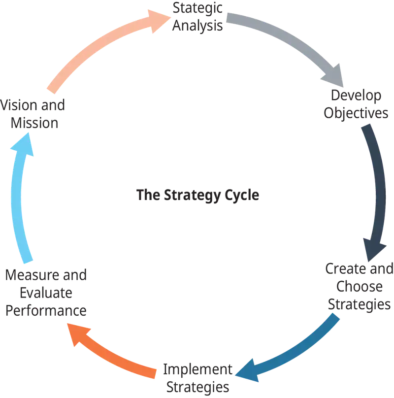
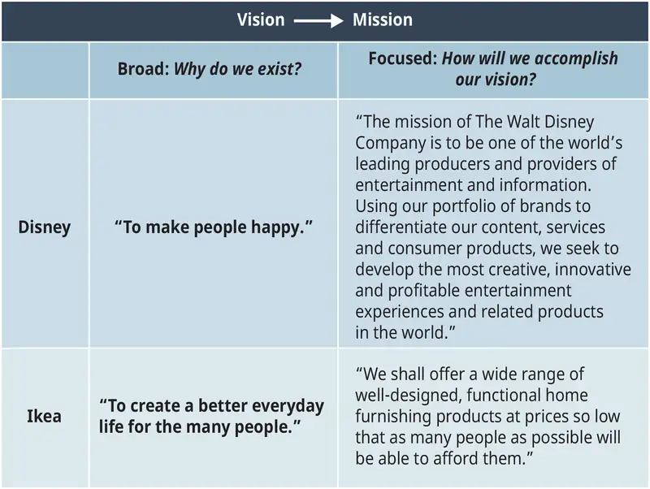
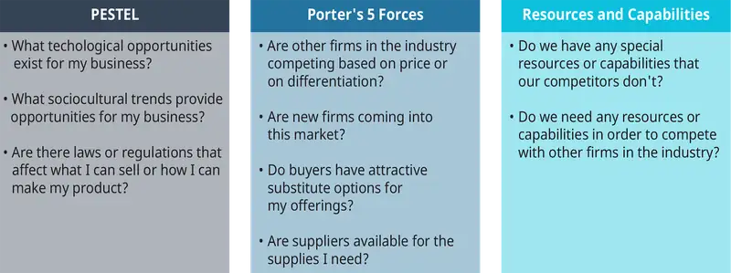
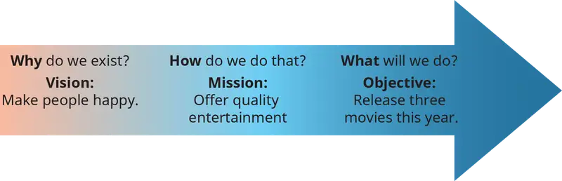
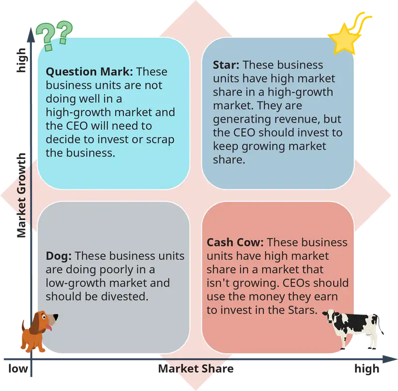
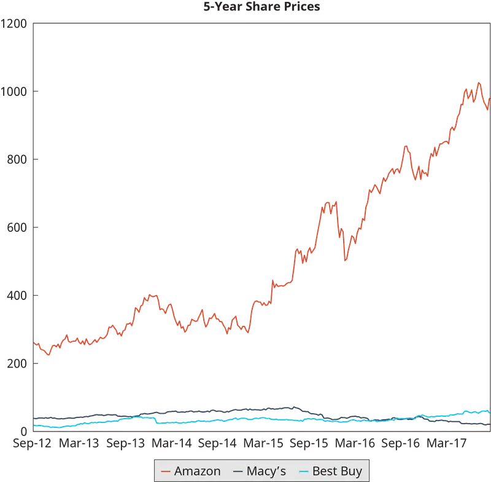
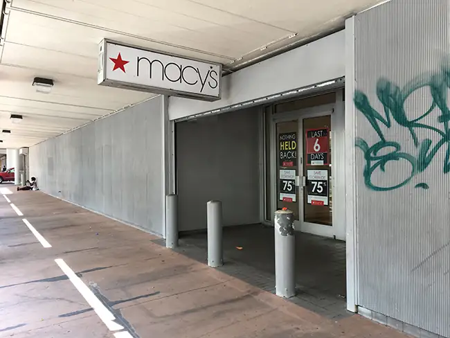
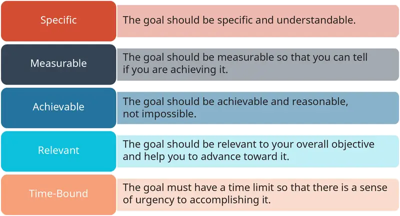
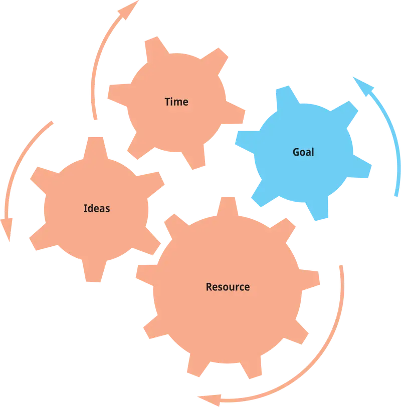
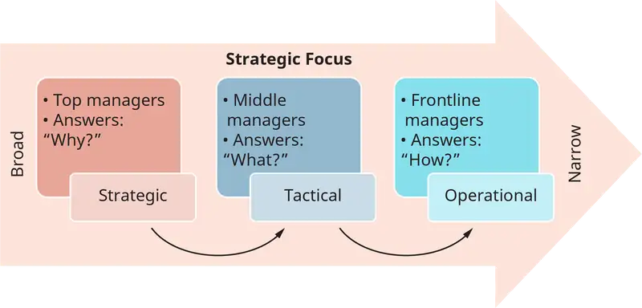

Chapter 9: The Strategic Management Process: Achieving and Sustaining Competitive Advantage¶
Introduction¶
Learning Outcomes
After reading this chapter, you should be able to answer these questions:
- What is the strategic management process?
- What is the difference between a firm’s vision and its mission?
- Why is strategic analysis important to strategy formulation?
- What are strategic objectives, levels of strategy, and a grand strategy? How are they related?
- How and why do managers plan? Why are goals important in the planning process?
- How and why do managers evaluate the effectiveness of strategic plans?
Exploring Managerial Careers: Chieh Huang, Boxed
As a successful entrepreneur, Chieh Huang knows how spot a business opportunity. His current business venture, Boxed, ships warehouse-club type products directly to customers’ homes. The company has grown from $8 million in revenue to more than $100 million in just three years. How has Huang achieved this success? He started “basically trying to solve a problem that I myself have. I grew up in the burbs, and every other weekend would go to the Price Club, and then I went to the city and didn’t have a car anymore. Am I just supposed to get ripped off?” Huang thought that other millennials might be in the same situation and developed a company to offer bulk items like paper towels and energy bars at warehouse-club prices to millennials who want app-based shopping convenience.
Huang explained his entrepreneurial approach this way: “With repeat entrepreneurs, you not only solve a problem, you look for changes taking place in the world that become tailwinds to help the business exponentially grow.” Environmental analysis might reveal an opportunity, but strategic planning is what makes it grow. Huang has managed growth by obtaining the resources necessary to serve more customers. As CEO of Boxed, Huang has raised money to build distribution centers, hired employees, developed private-label products to offer customers low prices, and expanded supplier relationships.
What is the strategy at Boxed? Huang discussed the company’s position in an interview on CNBC. He acknowledged that today’s selling environment is focused on “value, convenience, and brand,” and said that when companies sell at similar low prices and offer similar delivery services, the only real differentiator left is brand. Huang has worked hard to develop the Boxed brand, promoting it on CNN, MSNBC, and the Today Show. The Boxed brand is also enhanced by reports of the benefits Huang offers employees. The CEO pays college tuition for employees’ children and even pays for employee weddings. For millennials, a company’s values have become part of its value, and if the price and convenience offered by Boxed match other sellers, Boxed’s values may be their best asset in attracting customers. This YouTube video is a CNBC story about Boxed with an interview with Huang.
https://www.youtube.com/watch?v=3ANAe1vLAIw
9.1 Strategic Management¶
- What is the strategic management process?
In the previous chapter we focused on analyzing and understanding a firm’s competitive environment. In this chapter, we see how the information strategic analysis provides gets put to work. The strategic management process is the set of activities that firm managers undertake in order to try to put their firms in the best possible position to compete successfully in the marketplace. Strategic management is made up of several distinct activities, shown in Figure 9.3. This chapter will detail the role each activity plays in developing and sustaining a successful competitive position.
While Figure 9.3 presents strategic management as an orderly process. However, most top managers deal with all of the steps simultaneously; they engage in environmental scanning to update their analytical view of the firm, they are executing strategies formulated in the past, they are formulating strategies to execute in the future, and so on. While it is useful to discuss the strategic management process in a stepwise fashion, it’s important to point out that the cycle occurs such that everything is being done at once.

Concept Check
What activities make up the strategic management process?
9.2 Firm Vision and Mission¶
- What is the difference between a firm’s vision and its mission?
The first step in the process of developing a successful strategic position should be part of the founding of the firm itself. When entrepreneurs decide to start a business, they usually have a reason for starting it, a reason that answers the question “What is the point of this business?” Even if an entrepreneur initially thinks of starting a business in order to be their own boss, they must also have an idea about what their business will do. Overall, entrepreneurs start businesses for a variety of reasons. A vision statement is an expression of what a business’s founders want that business to accomplish. The vision statement is usually very broad, and it does not even have to mention a product or service. The vision statement does not describe the strategy a firm will use to follow its vision—it is simply a sentence or two that states why the business exists.
While a firm’s vision statement is a general statement about its values, a firm’s mission statement is more specific. The mission statement takes the why of a vision statement and gives a broad description of how the firm will try to make its vision a reality. A mission statement is still not exactly a strategy, but it focuses on describing the products a firm plans to offer or the target markets it plans to serve.
Figure 9.4 gives examples of vision and mission statements for the Walt Disney Company and for Ikea. Notice that in both cases, the vision statement is very broad and is not something a business could use as a strategy because there’s simply not enough information to exhibit out what kind of business they might be. The mission statements, on the other hand, describe the products and services each company plans to offer and the customers each company plans to serve in order to fulfill their vision.

An interesting thing to note about vision and mission statements is that many companies confuse them, calling a very broad statement their mission. For example, Microsoft says that its mission is “to help people around the world realize their full potential.” By the description above, this would be a good vision statement. However, Microsoft’s official vision statement is to “empower people through great software anytime, anyplace, and on any device.” Although the second statement is also quite broad, it does say how Microsoft wants to achieve the first statement, which makes it a better mission statement than vision statement.
Why are vision and mission statements important to a firm’s strategy for developing a competitive advantage? To put it simply, you can’t make a plan or strategy unless you know what you want to accomplish. Vision and mission statements together are the first building blocks in defining why a firm exists and in developing a plan to accomplish what the firm wants to accomplish.
Concept Check
What does a mission statement explain about a firm that a vision statement does not?
What are the similarities and differences between vision and mission?
9.3 The Role of Strategic Analysis in Formulating a Strategy¶
- Why is strategic analysis important to strategy formulation?
In the previous chapter, you read about the various levels of analysis that a manager carries out in order to understand their firm’s competitive environment. A strategic analysis of a firm’s external environment (the world, competitors) and internal environment (firm capabilities and resources) gives its managers a clear picture of what they have to work with and also what needs to be addressed when developing a plan for the firm’s success. Analysis comes early in the strategic process because the information a manager gets from the analysis informs the decision-making that follows. The information is so critical that entrepreneurs writing business plans (before the business even exists) do this analysis to understand if their business idea is feasible, and to understand how to position their business relative to existing competitors or potential customers in order to maximize their odds of success. Figure 9.5 outlines just a few of the questions that strategic analysis tools can help answer.

As an example of how the strategic tools help inform decisions, look back at the Walt Disney mission and vision in Figure 9.4. Imagine if you were Mr. Walt Disney today, and you wanted to start a company with a vision of making people happy in the 21st century. What products or services would you plan to offer? A PESTEL analysis would tell you that technology is an important part of entertainment and that sociocultural trends include people’s preference for on-demand entertainment, to be convenient and compatible with their busy schedules. Disney’s mission statement is broad enough about products and services to include a wide variety of offerings (they are thinking about the future too!), but if you were starting this company today, where would you start? Would you make movies for movie theaters, or develop a way to offer video entertainment online? Would you make console video games or phone apps? Who would your competition be, and what do they offer? How could you offer something better or cheaper?
Managers learn about the conditions that their business will have to operate in by doing strategic analysis, and understanding those conditions is required in order to develop the plans and actions that will lead to success.
Concept Check
What strategic analysis tools from the previous chapter would a manager use when planning a strategy for an existing business? What tools would be most helpful for a start-up business?
9.4 Strategic Objectives and Levels of Strategy¶
- What are strategic objectives, levels of strategy, and a grand strategy? How are they related?
Once a strategic analysis has been completed, the next step in the strategy process is to establish strategic objectives. At this point, the manager has decided why the company exists and how it will try to fulfill its mission. Strategic analysis has provided information about customer preferences, competitors, and the firm’s resources and capabilities. Now it is time to start planning for success.
Strategic objectives¶
Strategic objectives are the big-picture goals for the company: they describe what the company will do to try to fulfill its mission. Strategic objectives are usually some sort of performance goal—for example, to launch a new product, increase profitability, or grow market share for the company’s product.
Figure 9.6 shows what might be some strategic objectives for Disney. To make people happy (Disney’s vision), Disney focuses on entertainment (its mission). Top executives then decide each year what entertainment products the company will offer. Because Disney is a large corporation (more on that shortly), it has a variety of resources available to create entertainment products to offer. For example, they may decide to release three movies this year, as well as build a new theme park and create five new shows for their television network. In reality, the strategic objectives at Disney are much more complex than this, because some of these choices involve long-term efforts (they cannot build a theme park in one year).

Levels of Strategies¶
Once a firm has set its objectives, it then must turn to the question of how it will achieve them. A business-level strategy is the framework a firm uses to organize its activities, and it is developed by the firm’s top managers. Examples of business-level strategies include cost leadership and differentiation. These strategies are pursued by businesses with a single product or a range of products.
For example, imagine that you own a coffee shop. You aren’t Starbucks—you are a local shop in your neighborhood, and you run it yourself. You have employees, but you are the manager, owner, and all-around decision maker. While developing your vision and mission statements, you have already made some basic decisions about how your shop will operate. For example, you have chosen to either offer quick, inexpensive coffee (cost leadership) or a full-service coffee experience (differentiation). That decision impacts whether or not you choose premium or discount suppliers, how your shop is decorated, and how many employees you have to offer attention (service) to your customers. A business-level strategy guides a company in how they approach the activities in the value chain. Operations, for example, would focus on efficiency for a cost leader and focus on adding value for a differentiator.
When you develop strategic objectives for your shop, you will decide whether or not you want to try to attract more customers (grow), maintain your business at its current level, or shrink your business (perhaps you feel you don’t have enough time to spend with your family). If you decide that your objective is to grow, for example, you should set a specific target, say, to grow revenue by 10%. Once you set that specific objective, you can exhibit out exactly what business-level actions you will need to take to reach that target.
Even if a business is much larger than a local coffee shop, the strategic objectives pursued by these larger companies are not significantly different in concept. Large companies like Nike or Apple, which have many different business units, develop strategies at several levels. Each individual business unit (say Nike Basketball) will have a manager who decides the objectives for that unit, just as in the coffee shop example. However, the company as a whole will have a chief executive officer (the top manager for the company) who develops strategy for the entire corporation. Corporate strategy is the broadest level of strategy, and is concerned with decisions about growing, maintaining, or shrinking very large companies. At this level, business-level strategy activities, such as an advertising campaign to attract new customers for a single product line, are not going to be enough to significantly impact the company as a whole.
The corporate CEO essentially manages a group of businesses (unless the firm operates as one business unit) and develops strategies to create success for the overall group. Think of the group of businesses as an investment portfolio: investors try to have a diverse set of investments to spread risk and maximize the performance of the overall portfolio. On any given day, an investment that isn’t doing so well should be offset by one that is doing well. Corporate strategy tries to achieve the same thing, and CEOs have to weigh the pros and cons of each business unit and how it is contributing to the success of the overall corporation. For example, a company that has business units that do well in the winter (ski resorts) will try to also have business units that will perform in the summer (swimming pools) to reduce the risk of having periods of low revenue. One tool that corporate strategists use to understand how each of their businesses contributes to the corporation as a whole is the BCG Matrix, illustrated in Figure 9.7.

The BCG Matrix gives managers a quick picture of which business units are doing well and which are not. The tool has recommendations for businesses in each quadrant—for example, a business in the dog quadrant should be sold or closed. Cash cows provide income to the corporation, and stars provide growth. A CEO is always trying to balance the group of business units throughout the quadrants to maximize overall corporate performance. Note that the BCG Matrix is not applicable for firm’s that operate in one business unit.
In order to achieve the scale of growth necessary to meet corporate strategic objectives, a CEO must find ways to develop entirely new business units or reach brand-new markets. For example, for Walmart to grow their 2017 revenue by 5%, they would need to add $25 billion in new revenue. That’s more revenue than opening some new stores could generate. CEOs have several ways of growing their corporations, as shown in Table 9.1.
Table 9.1 (Attribution: Copyright Rice University, OpenStax, under CC-BY 4.0 license)
| How Grand Strategies Are Translated into Objectives and Actions | |||
|---|---|---|---|
| Grand Strategy | Strategic Objective | Potential Action | |
| Business-Level Strategy | Growth | Increase business revenue by 25% | • Introduce a new product. • Expand to a new location. |
| Corporate-Level Strategy | Growth | Increase corporate revenue by 10% | • Acquire a competitor. • Expand to a new country. • Develop a business in a new industry. |
| International Strategy | Growth | Attract 10% overall market share in a new country | • Export products to that country. • Acquire a local company in that country to gain their customers. |
In Walmart’s case, for example, growing has meant expanding their online capabilities to better compete with Amazon. They have acquired new companies to support this goal, including Shoebuy, Jet, ModCloth, and Flipkart to reach customers and increase their online product selection, as well as Parcel, to build delivery services.
International strategy is similar to corporate strategy because it is concerned with the large-scale actions involved in entering a brand-new geographic market. For companies operating internationally, strategic questions focus on how to successfully enter and compete in a foreign market. International strategy can combine with business-level or corporate-level strategies because a growth strategy at either scale can involve entering new markets in order to reach new customers.
The Grand Strategy¶
At all three levels, companies choose a grand strategy in response to the first question they should ask themselves: does the firm want to grow, strive for stability, or take a defensive position in the marketplace? Often, the choice of a grand strategy is based on conditions in the business environment because firms generally want to grow unless something (like a recession) makes that difficult. Note that a grand strategy and a corporate strategy can overlap significantly.
- A growth strategy involves developing plans to increase the size of the firm in terms of revenue, market share, or geographic reach (often a combination of these, as they can overlap significantly). Walmart is implementing a growth strategy with the acquisitions discussed in the corporate strategy section.
- A stability strategy is a strategy for a company to maintain its current income, market share, or geographic reach. A firm usually works to maintain a stable position when the alternative is to lose ground in one of those categories, for example because of competition or economic factors. In today’s business environment, publicly held firms rarely aim solely to maintain the status quo, because shareholders and the stock market reward firm growth.
- Firms pursue defensive strategies in the face of challenges. A company that is struggling may decide to shrink its operations to reduce costs in order to survive, for example. A company facing strong new competition may have to radically rethink its product offerings or pricing in order not to lose too much market share to the newcomer. A technological innovation may make a company’s products obsolete (or at least less attractive), forcing it to work to catch up to the new technology. Ford made a defensive decision when it recently decided to stop selling sedans in the United States because of slow sales compared to trucks and SUVs.
Operationalizing a Grand Strategy¶
A firm operationalizes its choice of a grand strategy differently at each level of strategy (business, corporate, international). At the business level, a growth strategy means that the manager will have to develop ways to grow the business by developing new products or expanding the customer base for existing products, either at home or abroad. Expanding a corporation can take a wider variety of forms. The CEO can develop new businesses, expand to new countries, acquire or merge with competitors, or perform previously outsourced activities. International expansion can be accomplished by exporting goods to another country or by acquiring a similar firm in another country to establish the company’s presence in that country. In all three of these cases, the grand strategy would be growth, and the strategic objectives could be expressed in terms of revenue growth, profit growth, market share growth, or even share price growth. Table 9.1 outlines how a grand strategy can be used to develop specific company actions.
Concept Check
What is the difference between strategic objectives and a strategy?
Describe the three levels of strategy and what a manager developing strategy at each level is concerned with.
What is a grand strategy, and how does it relate to strategic objectives and the three levels of strategy?
What are the three grand strategies, and why would firms pursue each of them?
9.5 Planning Firm Actions to Implement Strategies¶
- How and why do managers plan? Why are goals important in the planning process?
When managers create strategies, they are making plans for how their firm will compete in the marketplace and what actions the firm will have to undertake to compete. A plan is a decision to carry out a particular action in order to achieve a specific goal. A plan includes decisions about when and how actions should be accomplished and what resources will be required to complete the actions. Because planning is one of the basic functions of management, a good manager should have good goal-setting skills, technical knowledge about the tasks necessary to reach goals, time-management skills, and the organizational skills required to arrange company resources to be available to complete the planned tasks. Planning is a combination of deciding what needs to be done, figuring out how to do it, assigning roles to people and providing them the resources to complete their tasks, and overseeing the work to make sure it gets done correctly and in a timely manner.
Managing Change: Technology and Innovation: Amazon Puts Brick-and-Mortar Retailers on the Defensive
Amazon.com has become the place everyone buys from. It wasn’t always that way, though. In 1995, Jeff Bezos founded Amazon in the garage of his house as an online book-selling company. Even then, however, he had a bigger mission: he wanted Amazon to be "an everything store." In a little over two decades, Bezos has achieved his vision by growing Amazon in almost every possible way. Amazon reaches across international borders, with 14 country-specific websites, and has expanded product offerings to include almost anything a shopper might be looking for. They have developed their own products, like the Kindle reader and Echo/Alexa digital home assistant, and now, with the acquisition of Whole Foods grocery stores, Amazon operates physical “brick-and-mortar” stores. Amazon uses the expertise it has developed along the way to serve other online retailers by hosting their stores and also by offering other tech services.
Amazon’s online business model has transformed how people shop, which has impacted the retail industry. Malls and brick-and-mortar stores have struggled to match Amazon’s prices, selection, and convenience. Figure 9.8 shows the stock market’s reaction to retail’s struggles: Amazon’s share price has soared even as shares of stores such as Macy’s and Best Buy have lost value.

How have traditional brick-and-mortar retailers adjusted their strategies and objectives in response to changing customer shopping habits? Clothing retailers like Macy’s have had to adopt defensive strategies by lowering prices, reducing the number of locations, and expanding their own online sales capabilities. Big-box stores like Best Buy, in an effort to sustain their business, have fought back against “showrooming,” the process that occurs when a customer visits a brick-and-mortar store to check out a product in person and then goes home to order it online. To combat this practice, big-box stores offer installation services and price match the online retailers.
The transformation of the retail industry has hurt some stores, like Macy’s, whose share price has declined as they shrink their operations in order to try to survive. Best Buy, on the other hand, is trying to adapt by choosing defensive actions that will maintain their operations. Best Buy has had some success in figuring out how to attract buyers in the era of online retail, and market investors have approved their actions, as shown in their share price increases. Will these retailers survive over the long term? It’s hard to say. Macy’s and JCPenney have announced that they are closing stores, and Sears recently filed for bankruptcy. Analysts have predicted the death of Best Buy for years and still think that over the long term, physical retail stores are going to have to become service providers to differentiate themselves from product retailers like Amazon. For example, in 2002, Best Buy acquired Geek Squad, a computer-repair company, in order to provide in-home computer repair services.
Sources: Hartmans, Avery (2017). “15 fascinating facts you probably didn't know about Amazon.” Business Insider. http://www.businessinsider.com/jeff-bezos-amazon-history-facts-2017-4/#amazon-wasnt-the-companys-original-name-1. Accessed September 4, 2017; Amazon.com (2017). https://www.amazon.com/p/feature/rzekmvyjojcp6uc ; Radial (2016). “Best Buy Omnichannel Strategy: A Model for Other Brick-and-Mortar Retailers?” Radial.com. https://www.radial.com/insights/best-buy-omnichannel-strategy-model-other-brick-and-mortar-retailers. Accessed September 4, 2017; Garfield, Leanna (2017). “17 photos show the meteoric rise and fall of Macy's, JCPenney, and Sears.” Business Insider. http://www.businessinsider.com/department-store-sears-macys-jcpenney-closures-history-2017-8. Accessed September 4, 2017; Isidore, Chris (2018). “Sears, the Store that Changed America, Declares Bankruptcy.” CNN Business. https://www.cnn.com/2018/10/15/business/sears-bankruptcy/index.html . October 15, 2018; Kline, Daniel B. (2016). “Here's Why Even a Well-Run Best Buy Can't Compete.” The Motley Fool. https://www.fool.com/investing/general/2016/01/23/heres-why-even-a-well-run-best-buy-cant-compete.aspx. Accessed September 4, 2017; Innosight, Clayton Christensen and (2007). "Mega-Merger Fever." Forbes. https://www.forbes.com/2007/08/31/christensen-megamergers-att-pf-guru_in_cc_0904christensen_inl.html#4f3a915a7f69. Accessed October 14, 2018.
Critical Thinking Questions
What PESTEL forces (see Chapter 8) have contributed to the transformation of the retail industry?
Amazon has entered into the brick-and-mortar store business with the acquisition of Whole Foods. Do you think this is a good move or a bad move for Amazon? Why?
What strategic actions do you think a store like Macy’s can undertake to survive in the current retail industry?

Goal Setting¶
To examine the planning process, we need to start by understanding what the planning is for. A goal is something that you are trying to accomplish, and any firm will have many items on its list of things to accomplish. Consider the situation of a Walmart store in a college town. When it’s time for students to arrive back to school in the fall, the store needs to be ready with all the products students need when they move in. The Walmart store manager will plan months in advance and use information learned from the previous year’s sales to decide what products to order and how many, and when to have extra staff in the store to efficiently check out increased numbers of shoppers. Note that since Walmart is a global firm, goals will likely be prescribed from a higher level and the store manager’s responsibility would be to functional strategy response.
The manager’s plans will take into account the lead time for ordering products to make sure that mini-refrigerators and twin XL sheets arrive and can be stocked in the store in time for the back-to-school rush. Preparing for the back-to-school season may involve reducing prices on other items to get them out of the way to make room for all those small refrigerators, and hiring and training additional employees so that there will be enough associates to help students and their parents. The manager’s ultimate goal is to have a successful back-to-school sales season, but achieving that goal will involve completing tasks such as making product-selection decisions, meeting ordering deadlines, and setting intermediate goals for hiring and training additional employees.
Setting Good Goals: The SMART Framework¶
Good goals have a few common characteristics, and Figure 9.10 presents a framework for creating good goals.

The SMART framework can be applied to business or personal goals. A good goal should be specific, measurable, achievable, relevant, and time-bound.
Say you want to do well in this class. You need to turn that into a specific goal, because “doing well” is a little vague. Make the goal more specific by stating that your goal is to get an A in this course. Is this goal measurable? Well, yes: grades are good examples of performance measures. Is your goal achievable? That’s something you have to think about yourself: Do you usually get good grades? Are you able to put in the time to study the course material? Is the goal relevant to the achievement of a larger objective such as graduating with a good overall grade point average? If so, then getting an A in this class would contribute to that larger goal. Will you have time to accomplish your goal? Class-grade goals are inherently time-bound because the class ends on a certain date. So it’s possible that getting an A in this class is an overall SMART goal. To achieve it, however, you have to set some shorter term goals—for example, you should set a SMART goal for getting an A on the next exam.
The Planning Process¶
Figure 9.11 illustrates the planning cycle. It looks a lot like the strategy cycle shown in Figure 9.3 because they have a lot in common. In fact, the planning process is an integral part of the strategy cycle, since developing objectives, creating strategies, and implementing firm-wide activities all require extensive planning.
The first step in planning is to set a goal to be accomplished. Making sure that the goal checks off all of the SMART criteria will help make the planning process easier and more likely to be successful, so be sure to spend some time developing a good goal.
Once you’ve figured out your goal, the next step is to design the plan. “Designing the plan” involves several distinct activities, so let’s break it down into what needs to happen. Think of planning as a problem-solving exercise. A plan is a set of actions developed to accomplish a goal, and planning is essentially figuring out what those actions should be. The goal is the end point, and the plan answers the question “How do we get there?”
When designing a plan, a manager may think of many ways to achieve a goal. They or she can have a group of employees brainstorm to come up with ideas. Not all of the potential ideas are likely to be feasible, however. Part of the manager’s task in designing a plan is to coordinate various ideas with a firm’s resources and capabilities and its time constraints (see Figure 9.12). When does the goal need to be accomplished? What other resources does the firm need to complete the project?

Designing the plan becomes a puzzle of figuring out what is the best way to reach a goal with the resources the firm has or can reasonably get in the time available. There is no prescription for this, and the best way to learn how to plan is to practice. Fortunately, you probably have a pretty good amount of practice already, because you’ve been planning in one form or another for a long time. You have planned study time, team practices, club events, and even meals. Strategic planning uses the same skills in a new context. Planning a product launch may sound complicated, but so is planning a wedding. The scale and scope of the things a manager must coordinate in order to reach company goals may be larger than what you are used to, but the specific skills are likely not new at all.
For example, let’s take a look at the challenge Tesla is currently facing.
Tesla has developed a mass-market car and has a line of about half a million customers waiting to buy one. Until now, Tesla has been more of a boutique car maker, manufacturing small numbers of cars that they are able to sell at high prices. The Model 3, however, has been specifically conceived as an affordable car that almost anyone can buy. The brand and reputation Tesla has built with its premium cars has generated a lot of enthusiasm and demand for this new model. So Elon Musk, CEO of Tesla, is planning to make cars in larger numbers and more quickly than ever before.
What’s Tesla’s goal? Manufacture cars at a rate of 500,000 per year in order to meet demand. Is this a SMART goal? Analysts around the world are arguing over this (is it achievable?), but it’s the goal that Tesla is focusing on, so Musk has to design a plan to reach that goal. What resources does Tesla need in order to reach this level of production? They developed a car that is easy to manufacture, because they knew that they would want to build it in large numbers. Still, they need manufacturing facilities, parts, and production employees. To get these resources, they need money. Elon Musk is a spectacular fundraiser, but they need billions of dollars to develop manufacturing capabilities on this scale. So while Tesla builds the world’s largest factory in Nevada, called the Gigafactory, Musk continues to raise funds.
Components (specifically the batteries) are also an issue for the Model 3, and Musk has built his giant factory in part to manufacture the hundreds of thousands of batteries needed to power the Model 3. Tesla’s planning involves many interrelated activities, and figuring out what the activities are, what resources Tesla needs to perform the activities, and how to obtain resources that they need but don’t have yet are the challenges Elon Musk is tackling. Tesla is a fascinating company that is multifaceted. There have been serious questions raised about their ability to produce enough cars and an examination of more recent commentary is encouraged.
Implementing Plans for Different Levels of Firm Activity and Time Horizons¶
Developing plans happens simultaneously at multiple levels in any company. Plans, as in our earlier grade example, often require different steps in order to achieve a large-scale objective. If a firm decides on growth as a grand strategy, actions at every level of firm activity should contribute to firm growth, and managers at all of those levels should develop plans so that their part of the firm is working to implement the growth strategy. A grand strategy cascades throughout the company, becoming more and more specific, until front-line employees are working on specific tasks that support the grand strategy.
Time is an important consideration when top managers develop company goals and the plans to achieve them. In general, firms have two time spans that they plan for: short term and long term. A short-term strategic plan is one that can be accomplished in a year or sooner. A long-term strategic plan is developed when an objective cannot be accomplished in less than a year. Companies generally have both scales of plans in place at any given time: short-term plans might involve quarterly sales goals, for example, but a firm might have a longer-term goal of establishing operations in another country or building a new facility. Tesla’s Gigafactory and Apple’s new headquarters at Apple Park in Cupertino, California, are both multiyear, multibillion dollar projects, and so would be good examples of long-term plans. In Tesla’s case, the Gigafactory was initially planned many years ago when the company knew that it wanted to mass-produce cars at the scale required for the Model 3.
Scale Levels of Planning¶
Another dimension that impacts strategic planning is scale. We have already looked at some large-scale planning concepts, such as business-level and grand strategies. However, the day-to-day planning that managers do to take steps toward those bigger objectives is key to achieving success. Figure 9.13 shows the typical levels of planning going on in a company at any given time.

Notice that, if you compare Figure 9.13 to Figure 9.6, the “what” and “how” are switched. The switch is a scale switch. Vision and mission are both conceived at the broadest scale, and so even the “how” of the mission is a large-scale idea. In contrast, when managers are planning, the “how” of operational planning lays out precise actions and steps to follow to achieve a specific objective.
Let’s look at the levels one by one. Strategic planning is what we’ve been discussing so far. It’s the high-level planning performed by company executives in order to set the overall direction of the company. Grand strategies are part of strategic planning, as are business-level strategies such as cost leadership. Strategic planning connects the company’s actions back to its vision and mission statements (the “why does this company exist” question).
Tactical planning is mid-level planning that consists of broad ideas of what the company should do to pursue its mission. This is the sort of planning done by division managers. For example, Walmart division managers carry out the company’s growth and cost-leadership strategies by finding ways for the company to grow and continue to be able to offer low prices. They may decide where to locate distribution centers to maximize store-stocking efficiency, which manufacturers of goods they can buy inventory from at low prices, and where to build new stores to attract more customers.
Operational planning lays out the front-line activities that each employee in the company will do to advance the tactical plans. A McDonald’s restaurant manager develops operational plans, but you might recognize them more as employee schedules or promotional plans. Operational plans are the daily activities required for the company to function, including ordering inventory or supplies, scheduling workers and defining their work tasks, and developing sales goals and promotions to help achieve those goals. At McDonald’s, as at other companies that pursue a cost-leadership strategy, scheduling enough employees to work in the restaurant at specific times to keep the store functioning smoothly without scheduling more than you need (and incurring excess labor costs) is a critical task for the manager, and doing that task successfully is how the manager contributes to the company’s larger cost-leadership strategy.
Implementing Planned Strategies¶
Implementation of planned strategies refers to the execution of a strategy by assigning tasks for people to carry out to accomplish the company’s strategic goals. Although a manager may talk about “implementing a differentiation strategy,” the real implementation of a strategy happens at the bottom of not just the strategy hierarchy, but the organizational hierarchy, in the actions of operational employees who carry out planned tasks that add value to the company’s product. Such tasks include research and development to add unique features, monitoring manufacturing to ensure company products meet high quality standards, and marketing the product to add brand value in the eyes of consumers.
Concept Check
What are the three levels of planning, and what kinds of plans do managers develop at each level?
Why is strategic implementation most commonly carried out at the operational level?
9.6 Measuring and Evaluating Strategic Performance¶
- How and why do managers evaluate the effectiveness of strategic plans?
The last step in the strategy cycle in Figure 9.3 is measuring and evaluating performance. The “M” in SMART goals is also about measurement. A company’s actions need to be measured so that managers can understand if the firm’s strategic plans are working. Any action in a plan should be designed so that the people performing the action and the manager who is supervising employees can understand whether or not the action is accomplishing what it was designed to. You have been living in this sort of framework all of your life. For many life goals, standards exist to measure achievements. For example, students are given standardized tests to see if they are learning what they are expected to, and the results are used to assess the effectiveness of education at all levels.
In businesses, measurement is also a fact of life. Investors decide whether or not to invest in a particular company based on its performance, and publicly held companies are required to disclose their financial performance so investors can make informed decisions. So the overall performance of a business is often defined by its financial measures, but how do they make sure their financial performance will make investors happy? Strategy. Firms make strategic plans in order to be successful. This chapter has explained the steps of making those plans, but a final step closes the circle of the strategy cycle. Checking to see if that success is happening is as important as making the plans in the first place.
Performance measurement comes in many forms, from financial reports to quality measures like defect rates. Any activity a firm can perform can have a performance measure developed to evaluate the success of that activity. Table 9.2 lists a few common firm objectives and how actions to achieve them might be evaluated. Evaluation involves setting a performance standard, measuring the results of firm activities, and comparing the results to the standard. One specific form of evaluation is called benchmarking, a process in which the performance standard is based on another firm’s superior performance. In the hospitality industry, for example, Disney theme park operations are used as standards for other companies in the theme park industry. Universal theme parks, for example, likely compare their customer satisfaction to Disney’s in order to evaluate whether or not they are also offering a superior park experience to their customers.
Table 9.2 (Attribution: Copyright Rice University, OpenStax, under CC-BY 4.0 license)
| Three Different Actions to Support a Differentiation Strategy and Ways to Measure Results | |||
|---|---|---|---|
| Strategic Plan | Tactical Plan | Operational Plan | Performance Measure |
| Product differentiation | Innovation | Hire three engineers to develop new products. | Number of new products launched |
| Product differentiation | Increase customer satisfaction | Improve customer service with hiring and training program for customer service associates. | Customer complaints per 10,000 products sold |
| Product differentiation | Quality improvement | Reduce defective products by improving manufacturing process accuracy. | Defect rate per 10,000 units produced |
Performance evaluation closes the strategy cycle because of what managers do with the feedback they get in the evaluation process. When a manager compares performance to a standard, they are deciding whether or not the performance is acceptable or needs to be improved. The strategy cycle is a process managers use to achieve an advantage in the marketplace, and the measurement and evaluation stage tells managers whether the advantage is being achieved. If firm performance meets or exceeds objectives, then the manager reports the success to middle and upper-level managers. The company CEO may develop more ambitious objectives based on that success, and the strategy cycle starts over. If performance fails to meet objectives, the operational manager must develop new actions to try to meet the objectives or report to higher-level managers that the objectives cannot be met. In this case, a new round of operational planning begins, or upper managers examine their strategic plan to see if they need to make adjustments.
The strategy process is always circular. Performance feedback becomes part of the strategic analysis of the firm’s capabilities and resources, and firm leadership uses the information to help develop better strategies for firm success.
Concept Check
Why is performance evaluation critical in strategic planning?
How does the strategic planning process inform itself?
Chapter Review¶
Key Terms¶
- BCG matrix
- a tool used to evaluate the various business units in a corporation.
- benchmarking
- a performance evaluation technique where the standard for a firm’s performance is based on another firm’s superior performance.
- business-level strategy
- ways that single-product firms organize their activities to succeed against rivals; at this level, include cost leadership and differentiation.
- corporate strategy
- the broadest level of strategy, concerned with decisions about growing, maintaining, or shrinking very large companies.
- defensive strategy
- a grand strategy pursued by companies facing challenges.
- goal
- something that a firm is trying to accomplish; can also be called an objective.
- growth strategy
- a grand strategy to increase the size of the firm in terms of revenue, market share, geographic reach, or a combination of these elements.
- implementation
- the execution of a strategy by planning and assigning actions to employees to carry out in order to accomplish the company’s strategic objectives.
- international strategy
- the level of strategy concerned with the large-scale actions involved in entering a brand-new geographic market.
- long-term strategic plan
- company actions to achieve an objective that will take a year or longer to accomplish.
- mission statement
- a general description of how the firm will try to accomplish the firm’s vision.
- operational planning
- first-line strategic planning consisting of specific daily and short-term actions that employees will perform to make the company function.
- performance measurement
- the evaluation of firm activities to determine the success of that activity in helping the firm reach its strategic objectives.
- plan
- a decision to carry out a particular action in order to achieve a specific goal, including decisions about when and how the action should be accomplished and what resources will be required to carry out the action.
- short-term strategic plan
- company actions to achieve an objective in a time frame of a year or less.
- SMART framework
- an acronym for the characteristics of good goals: specific, measurable, achievable, relevant, and time-bound.
- stability strategy
- a grand strategy for a company that wants maintain its current income, market share, or geographic reach.
- strategic analysis
- the systematic examination of a firm’s internal and external situation that informs managerial decision-making.
- strategic management process
- the set of activities that firm managers undertake in order to try to put their firms in the best possible position to compete successfully in the marketplace.
- strategic objectives
- the big-picture goals for the company: what the company will do to try to fulfill its mission.
- strategic planning
- connects the company’s actions back to its vision and mission statements.
- tactical planning
- mid-level strategic planning consisting of broad ideas of what a company should do to pursue its mission.
- vision statement
- a broad expression of what a business’s founders want that business to accomplish.
Summary¶
9.1 Strategic Management¶
- What is the strategic management process?
The strategic management process is the set of activities that firm managers undertake to put their firms in the best possible position to compete successfully in the marketplace. Strategic management is made up of several distinct activities: developing the firm’s vision and mission; strategic analysis; developing objectives; creating, choosing, and implementing strategies; and measuring and evaluating performance.
9.2 Firm Vision and Mission¶
- What is the difference between a firm’s vision and its mission?
A firm’s vision is a broad statement expressing the reason for the firm’s existence and what it hopes to accomplish. The mission statement explains (still broadly) how the firm intends to fulfill its vision—for example, by stating what products or services the firm will offer or what customers it wants to serve.
9.3 The Role of Strategic Analysis in Formulating a Strategy¶
- Why is strategic analysis important to strategy formulation?
Strategic analysis produces information that managers need in order to develop appropriate strategies for their firms. A good strategy should use a firm’s resources and capabilities to stake out a position in the marketplace that sets it apart from competitors and enables it to successfully compete in the external environment.
9.4 Strategic Objectives and Levels of Strategy¶
- What are strategic objectives, levels of strategy, and a grand strategy? How are they related?
Strategic objectives are the big-picture goals for the company: what the company will do to try to fulfill its mission. These goals are broad and are developed based on top management’s choice of a generic competitive strategy and grand strategy for the firm. For example, cost-leadership and growth competitive and grand strategies will require managers to develop objectives for growing the firm in a low-cost way.
Business-level strategy is concerned with positioning a single company or business unit that focuses on a single product or product line. The primary business-level strategies are cost leadership and differentiation, as well as focus, which is combined with one of the other two strategies (focus-cost leadership, focus-differentiation).
Corporate-level strategy is concerned with the management and direction of multi-business corporations. These large firms make decisions about what businesses and industries to operate in so they can improve their overall performance and reduce the risk they would face if all of their operations were concentrated in a single business or industry. Corporate CEOs use the BCG Matrix to evaluate their portfolio of businesses and use corporate actions like acquisitions to make significant changes to their companies.
International strategy can be combined with either of the previous two strategies to incorporate international operations into a business or corporation. International strategy answers questions of what country or countries to operate in and how to be successful in foreign operations.
Grand strategies outline an approach to firm growth. The three grand strategies are growth, stability, and defensive, and a firm chooses one of these approaches in addition to their choice of business-level, corporate, and/or international strategies. The choice of grand strategy is often dictated by conditions in the business environment such as recessions or competitor activities.
9.5 Planning Firm Actions to Implement Strategies¶
- How and why do managers plan? Why are goals important in the planning process?
Managers plan in order to decide what actions the firm will perform in order to achieve a specific goal. Planning includes decisions about when and how the goal should be accomplished and what resources will be required to perform the planned action. Planning is one of the basic functions of management, along with organizing, leading, and controlling.
Firms typically have several levels of planning happening simultaneously: one based on time and another based on detail. The time scale is expressed in terms of short-term (within the year) or long-term (over a yearlong) planning. Planning details become more specific as the manager moves downward in the hierarchy of planning levels. Strategic planning is the responsibility of firm leadership (CEO), while unit or division managers take the CEO’s broad plans and focus them to be more suitable for their own units (tactical planning). Operational planning is the frontline manager’s domain—they develop specific action plans for operational employees so that their work advances the entire firm towards the large-scale strategic goal.
Good goals are specific, measurable, achievable, relevant, and time-bound. These terms can be remembered by using the acronym SMART. Goals are critical to planning because they focus firm activities on specific objectives or outcomes.
9.6 Measuring and Evaluating Strategic Performance¶
- How and why do managers evaluate the effectiveness of strategic plans?
Performance evaluation is to determine if plans have been successful and identify any changes that might be necessary. This is done both at the end and the beginning of strategic planning because when managers measure firm activities and progress towards objectives, the information they learn by doing that measurement becomes part of the analysis they use to develop improved plans and objectives to keep the firm on track to fulfill their mission and improve their overall performance.
Chapter Review Questions¶
- What does a mission statement explain about a firm that a vision statement does not?
- Describe the three levels of strategy and what a manager developing strategy at each level is concerned with.
- Give an example for why a firm would pursue each of the three grand strategies.
- What actions can help a firm grow?
- What managerial skills and actions are included in the planning process?
- Why are good goals important to the planning process?
- What are the strategic planning time frames? How do they work together?
- Why is performance measurement often the start of new strategy development?
Management Skills Application Exercises¶
-
(Analytical Skills) You have recently completed a leadership development program, and your company has given you a retail store to manage. The employees at your store are diverse in terms of age, race, gender, and fluency in English. Your company has told you to set individual performance objectives for your employees to increase your store’s profitability.
A. What specific types of actions do you think you should include in a plan to increase profitability in a retail environment?
B. Would you set the same performance objectives for different store roles, for example sales associates and cashiers?
C. Should your employees be involved in creating their own performance objectives? Why or why not?
D. Should your communication of performance goals be adapted for the diversity of the employees you supervise? How and why (or why not)?
-
(Ethical skills) You have probably experienced a situation in which you were not happy with the service you received as a customer of a business. Put yourself in the shoes of the manager of a business, and think about the following:
A. How does a company’s vision and mission impact your approach to trying to appease an unhappy customer?
B. Imagine that the company follows a cost-leadership strategy and has a “no cash refunds” policy in order to reduce company costs. What kind of plan or rules would you develop for your employees to follow to deliver consistent customer service if a customer wants a refund?
C. When might it be ethical to violate the rules you developed in (b) above in order to deliver the right response to a customer service problem?
-
(Personal skills) Use the strategy cycle (Figure 9.3) to outline a strategy for yourself. What is your personal vision and mission? Analyze your current situation, and develop three personal, professional, or educational goals or objectives that you would like to reach within the next five years. Brainstorm some strategies to achieve those goals. Even though you can’t really implement them in the context of this exercise, think about performance measures you might use to track your progress towards your objectives.
Managerial Decision Exercises¶
-
Each of the following statements is a goal or objective, but it is not expressed very clearly. Rewrite each statement as a SMART goal, and be ready to explain what you had to change to make it SMART.
a. Amazon wants to improve product delivery times.
b. Starbucks baristas should make customized drinks more quickly.
c. Sales associates should sell more cars this month.
d. McDonald’s needs more customers at dinnertime.
e. FedEx wants to compete with UPS.
f. Boxed wants to reach more customers.
g. Lyft wants to increase revenue.
-
Entrepreneurs must be strategic thinkers in order to develop the plans and objectives necessary to start a business that will last. Imagine you are starting a new music-streaming service. You have decided to differentiate your service from the others already in the marketplace. Think of three ways to add value to your service and also the performance measures you’ll need to use in order to know if your added value is really valued by customers.
Critical Thinking Case¶
Interface Inc.’s Strategy for Sustainability¶
Watch Interface CEO Ray Anderson present his vision for Interface, Inc.:
https://www.youtube.com/watch?v=NskixbVn0BE
Interface, Inc. is the world’s largest manufacturer of carpet tile. Headquartered in Atlanta, Georgia, the global company manufactures the kind of carpet that millions of commercial buildings of all types have on their floors. Carpet manufacturing is a historically dirty business. Not only is commercial carpet a petroleum-based product, the manufacturing process is water-intensive, and carpet squares are installed using toxic glue. Because this carpet is aimed at the commercial market (think schools, libraries, malls, office buildings), it usually does not have a long life span. Malls and schools regularly remove and replace carpet after just a few years because of fading and wear from daily foot traffic. This puts millions of square feet of old carpet into landfills annually.
In 1994, Ray Anderson, the founder of Interface, was put on the spot when he was asked what his company was doing to be sustainable. He realized that the answer to the question was, unfortunately, “not much.” Anderson realized that in order to improve the company’s sustainability performance, Interface was going to have to radically reimagine every part of their business.
Unlike what many CEOs in his position might have done, Anderson decided to do just that. He gave Interface a new vision, which he called Mission Zero. The objective was to reduce Interface’s environmental impact to zero by the year 2020. To accomplish this vision, the company looked at every aspect of its operations and developed what it called the “Seven Fronts of Sustainability”:
Front #1—Eliminate Waste: Eliminate all forms of waste in every area of the business.
Front #2—Benign Emissions: Eliminate toxic substances from products, vehicles, and facilities.
Front #3—Renewable Energy: Operate facilities with 100% renewable energy.
Front #4—Closing the Loop: Redesign processes and products to close the technical loop using recycled and biobased materials.
Front #5—Efficient Transportation: Transport people and products efficiently to eliminate waste and emissions.
Front #6—Sensitizing Stakeholders: Create a culture that uses sustainability principles to improve the lives and livelihoods of all of our stakeholders.
Front #7—Redesign Commerce: Create a new business model that demonstrates and supports the value of sustainability-based commerce.
To achieve the seven sustainability goals, Interface needed to redesign their operations from start to finish and even reconsider what constituted the start and finish for their products. Anderson empowered employees and invested in research to develop new ways to design, manufacture, and install carpet tiles. Interface also reimagined how its clients would use and dispose of carpet tiles.
Changing the strategy of a successful company is always risky, but Anderson felt he had to take the risk. Developing action plans for such a radical change meant that every step of the business had to be rethought, and Interface is on the way to achieving Ray Anderson’s vision. “Since January 2014, Interface's plants in Holland and Northern Ireland have been using around 90% less carbon and 95% less water than in 1996, with no waste going to landfill. Its plant in Scherpenzeel, Netherlands, has hit two of its zero targets.”
How has Interface made these changes? In addition to changing the way they thought about their product’s life cycle, Interface has implemented performance measures to track its progress and it has incentivized employees to be part of the company’s successful redesign. Connecting company actions to real cost savings was a key part of Ray Anderson’s vision. “Over time, programs that linked bonuses for employees at all company levels to reductions in waste started to put meat on the bones of Ray's ‘business case for sustainability.’” Interface’s costs have dropped as they have learned to use fewer resources to manufacture their products, and the cost savings have improved profitability even as Interface continues to invest in Mission Zero.
Critical Thinking Questions
- What reaction do you think employees had when Ray Anderson announced he wanted to change the company’s mission?
- How would you turn the Seven Fronts of Sustainability into SMART goals?
- How is tying rewards to improved sustainability performance a form of strategic control?
Sources: Interface Inc. company website: http://www.interfaceglobal.com/Company.aspx and sustainability site: http://www.interfaceglobal.com/Sustainability.aspx ; Thorpe, Lorna (2014). “Interface is a carpet-tile revolutionary.” The Guardian Sustainable Business. https://www.theguardian.com/sustainable-business/sustainability-case-studies-interface-carpet-tile-revolutionary; Davis, Mikhail (2014). “Radical Industrialists: 20 years later, Interface looks back on Ray Anderson's legacy.” Greenbiz.com. https://www.greenbiz.com/blog/2014/09/03/20-years-later-interface-looks-back-ray-andersons-legacy.
Adapted from Principles of Management by OpenStax, licensed under CC BY 4.0. Access the original for free at openstax.org. Changes: converted to the web reading format of The Open Book Project.